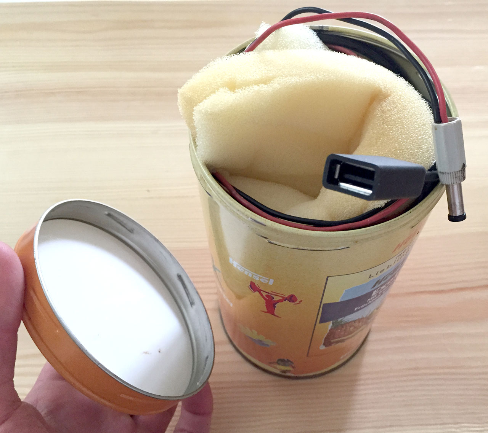

Wenzel Massag
It's our vision of the future that guides our decisions towards itself.
Our present is just the result.
It's our vision of the future that guides our decisions towards itself.
Our present is just the result.
As I should have expected, building a real physical prototype proofed to be challenging. My digital prototype (you can find the renderings on last week's page) was very helpful from several perspectives. I was able tu build a crude but effective prototype this week that had the shape and dimensions of my digital prototype, it was of course not yet a cast aluminium cylinder with custom rubber lids, but it was a cylinder with a USB port for charging and a connection to hook it up to a dynamo:

You can see the USB port to plug in any USB chargeable device and the two wires, here with a small socket, that connect to the dynamo or in this case I added the socket so I could simulate the bike as a power source indoors for testing. To test run it on a bike those two wires are attached, usually with small clamps, to the dynamo and the bike-frame.
All in all I am committed to a clear direction that may require me to replace my gap for the last week of this project with a design problem I was addressing in parallel to this course at work. I know exactly where I want to go with this product from here, but its simply too big a project for the one week left to build prototypes in this course.
In parallel to this course I was working on a website for a small business that is currently in the stage of first prototype for mobile. I believe given the time-frame I will shelve my current gap and post a summary of me addressing the other one alongside my beta prototype next week.
Checking against the criteria for this week's evaluation, I noticed that despite everything its actually quite good: